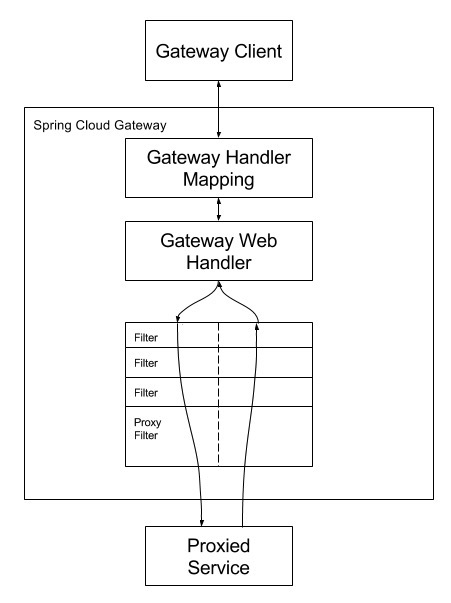
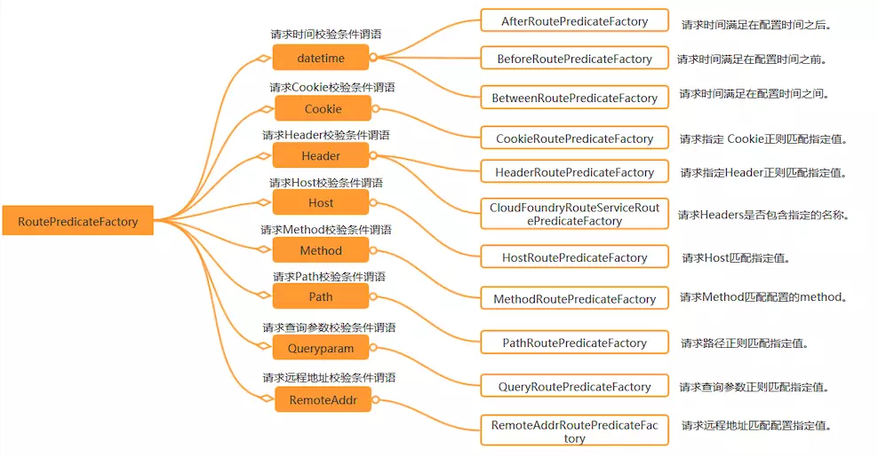

Spring cloud gateway
该项目提供了一个在Spring生态系统之上构建的API网关，包括：Spring 5，Spring Boot 2和Project Reactor。Spring Cloud Gateway旨在提供一种简单而有效的方法来路由到API，并为它们提供跨领域的关注点，例如：安全性，监视/指标和弹性。
1.如何引入Spring Cloud Gateway
要在您的项目中包含Spring Cloud Gateway, 使用
group ID： org.springframework.cloud
artifact ID ： spring-cloud-starter-gateway
如果包括启动器，但不希望启用网关，请设置spring.cloud.gateway.enabled = false。
❗️ Spring Cloud Gateway构建在 Spring Boot 2.x, Spring WebFlux, and Project Reactor.因此，您熟悉的许多同步库(例如Spring Data和Spring Security)和模式在使用Spring Cloud Gateway时可能并不适用。如果您不熟悉这些项目，我们建议您在使用Spring Cloud Gateway之前先阅读它们的文档，熟悉其中的一些新概念。
❗️Spring Cloud Gateway需要Spring Boot和Spring Webflux提供的Netty运行时。它不能在传统Servlet容器中工作，也不能在构建为WAR时工作。( 也就是说和spring mvc的依赖冲突 )
2.Glossary 术语表
- **Route 路由:**网关的基本构件。它由一个ID、一个目标URI、一个谓词集合和一个过滤器集合定义。如果聚合谓词为真，则匹配路由。
- Predicate:This is a Java 8 Function Predicate。输入类型是Spring Framework
ServerWebExchange。这使您可以匹配来自HTTP请求的任何内容，例如 headers or parameters。 - Filter:这些是 Spring Framework
GatewayFilter的实例，使用特定的工厂构造。在这里，您可以在发送下游请求之前或之后修改请求和响应。
3.How It Works
The following diagram provides a high-level overview of how Spring Cloud Gateway works:

Clients make requests to Spring Cloud Gateway.
客户端向Spring Cloud Gateway发出请求。
If the Gateway Handler Mapping determines that a request matches a route,
如果网关处理程序映射确定了一个请求与一个路由匹配，
it is sent to the Gateway Web Handler.
那么它将被发送到网关Web处理程序。
This handler runs the request through a filter chain that is specific to the request.
此处理程序通过特定于该请求的筛选器链运行该请求。
The reason the filters are divided by the dotted line is that filters can run logic both before and after the proxy request is sent.
过滤器被虚线分割的原因是过滤器可以在发送代理请求之前和之后运行逻辑。
All “pre” filter logic is executed. Then the proxy request is made. After the proxy request is made, the “post” filter logic is run.
所有的“预”过滤器逻辑被执行。然后发出代理请求。发出代理请求后，将运行“post”筛选逻辑。
✅ URIs defined in routes without a port get default port values of 80 and 443 for the HTTP and HTTPS URIs, respectively.
在没有端口的路由中定义的uri对于HTTP和HTTPS uri分别获得默认端口值80和443。
4.Configuring Route Predicate Factories and Gateway Filter Factories
配置路由谓词工厂和过滤器工厂
There are two ways to configure predicates and filters: shortcuts and fully expanded arguments. Most examples below use the shortcut way.
这里有两种方式去配置谓词和过滤器，快捷方式和完全展开的方式，下面大多数例子都是快捷方式
The name and argument names will be listed as code in the first sentance or two of the each section. The arguments are typically listed in the order that would be needed for the shortcut configuration.
名称和参数名称将作为代码列在每个部分的第一个或两个句子中。参数通常按照快捷配置所需的顺序列出。
4.1 Shortcut Configuration
Shortcut configuration is recognized by the filter name, followed by an equals sign (=), followed by argument values separated by commas (,).
application.yml
1 | spring: |
4.2. Fully Expanded Arguments
Fully expanded arguments appear more like standard yaml configuration with name/value pairs. Typically, there will be a name key and an args key. The args key is a map of key value pairs to configure the predicate or filter.
application.yml
1 | spring: |
This is the full configuration of the shortcut configuration of the Cookie predicate shown above.
5. Route Predicate Factories

Spring Cloud Gateway matches routes as part of the Spring WebFlux HandlerMapping infrastructure. Spring Cloud Gateway includes many built-in route predicate factories. All of these predicates match on different attributes of the HTTP request. You can combine multiple route predicate factories with logical and statements.
Spring Cloud Gateway将路由匹配为Spring WebFlux HandlerMapping基础设施的一部分。Spring Cloud Gateway包括许多内置的路由谓词工厂。所有这些谓词都匹配HTTP请求的不同属性。您可以使用and语句组合多个路由谓词工厂。
5.1. The After Route Predicate Factory
The After route predicate factory takes one parameter, a datetime (which is a java ZonedDateTime). This predicate matches requests that happen after the specified datetime. The following example configures an after route predicate:
After 谓词工厂接受一个datetime参数,此谓词匹配发生在指定日期时间之后的请求。
Example 1. application.yml
1 | spring: |
This route matches any request made after Jan 20, 2017 17:42 Mountain Time (Denver).
5.2. The Before Route Predicate Factory
The Before route predicate factory takes one parameter, a datetime (which is a java ZonedDateTime). This predicate matches requests that happen before the specified datetime. The following example configures a before route predicate:
Example 2. application.yml
1 | spring: |
This route matches any request made before Jan 20, 2017 17:42 Mountain Time (Denver).
5.3. The Between Route Predicate Factory
The Between route predicate factory takes two parameters, datetime1 and datetime2 which are java ZonedDateTime objects. This predicate matches requests that happen after datetime1 and before datetime2. The datetime2 parameter must be after datetime1. The following example configures a between route predicate:
Example 3. application.yml
1 | spring: |
This route matches any request made after Jan 20, 2017 17:42 Mountain Time (Denver) and before Jan 21, 2017 17:42 Mountain Time (Denver). This could be useful for maintenance windows. //维护窗口有效期特别有用
5.4. The Cookie Route Predicate Factory
The Cookie route predicate factory takes two parameters, the cookie name and a regexp (which is a Java regular expression). This predicate matches cookies that have the given name and whose values match the regular expression. The following example configures a cookie route predicate factory:
接受两个参数，cookie 的name = 指定的name 并且 value 满足正则表达式
Example 4. application.yml
1 | spring: |
This route matches requests that have a cookie named chocolate whose value matches the ch.p regular expression.
5.5. The Header Route Predicate Factory
The Header route predicate factory takes two parameters, the header name and a regexp (which is a Java regular expression). This predicate matches with a header that has the given name whose value matches the regular expression. The following example configures a header route predicate:
Example 5. application.yml
1 | spring: |
This route matches if the request has a header named X-Request-Id whose value matches the \d+ regular expression (that is, it has a value of one or more digits).
5.6. The Host Route Predicate Factory
The Host route predicate factory takes one parameter: a list of host name patterns. The pattern is an Ant-style pattern with . as the separator. This predicates matches the Host header that matches the pattern. The following example configures a host route predicate:
Example 6. application.yml
1 | spring: |
URI template variables (such as {sub}.myhost.org) are supported as well.
This route matches if the request has a Host header with a value of www.somehost.org or beta.somehost.org or www.anotherhost.org.
This predicate extracts the URI template variables (such as sub, defined in the preceding example) as a map of names and values and places it in the ServerWebExchange.getAttributes() with a key defined in ServerWebExchangeUtils.URI_TEMPLATE_VARIABLES_ATTRIBUTE. Those values are then available for use by GatewayFilter factories
5.7. The Method Route Predicate Factory
The Method Route Predicate Factory takes a methods argument which is one or more parameters: the HTTP methods to match. The following example configures a method route predicate:
Example 7. application.yml
1 | spring: |
This route matches if the request method was a GET or a POST.
5.8. The Path Route Predicate Factory
The Path Route Predicate Factory takes two parameters: a list of Spring PathMatcher patterns and an optional flag called matchOptionalTrailingSeparator. The following example configures a path route predicate:
Example 8. application.yml
1 | spring: |
This route matches if the request path was, for example: /red/1 or /red/blue or /blue/green.
This predicate extracts the URI template variables (such as segment, defined in the preceding example) as a map of names and values and places it in the ServerWebExchange.getAttributes() with a key defined in ServerWebExchangeUtils.URI_TEMPLATE_VARIABLES_ATTRIBUTE. Those values are then available for use by GatewayFilter factories
A utility method (called get) is available to make access to these variables easier. The following example shows how to use the get method:
1 | Map<String, String> uriVariables = ServerWebExchangeUtils.getPathPredicateVariables(exchange); |
5.9. The Query Route Predicate Factory
The Query route predicate factory takes two parameters: a required param and an optional regexp (which is a Java regular expression). The following example configures a query route predicate:
Example 9. application.yml
1 | spring: |
The preceding route matches if the request contained a green query parameter.
application.yml
1 | spring: |
The preceding route matches if the request contained a red query parameter whose value matched the gree. regexp, so green and greet would match.
5.10. The RemoteAddr Route Predicate Factory
The RemoteAddr route predicate factory takes a list (min size 1) of sources, which are CIDR-notation (IPv4 or IPv6) strings, such as 192.168.0.1/16 (where 192.168.0.1 is an IP address and 16 is a subnet mask). The following example configures a RemoteAddr route predicate:
Example 10. application.yml
1 | spring: |
This route matches if the remote address of the request was, for example, 192.168.1.10.
5.11. The Weight Route Predicate Factory
The Weight route predicate factory takes two arguments: group and weight (an int). The weights are calculated per group. The following example configures a weight route predicate:
Example 11. application.yml
1 | spring: |
This route would forward ~80% of traffic to weighthigh.org and ~20% of traffic to weighlow.org
5.11.1. Modifying the Way Remote Addresses Are Resolved
修改远程地址解析的方式
By default, the RemoteAddr route predicate factory uses the remote address from the incoming request. This may not match the actual client IP address if Spring Cloud Gateway sits behind a proxy layer.
通常情况下，RemoteAddr路由谓词工厂使用来自传入请求的远程地址。如果Spring Cloud Gateway位于代理层之后，那么这可能与实际的客户端IP地址不匹配。
You can customize the way that the remote address is resolved by setting a custom RemoteAddressResolver. Spring Cloud Gateway comes with one non-default remote address resolver that is based off of the X-Forwarded-For header, XForwardedRemoteAddressResolver.
通过设置自定义RemoteAddressResolver，可以自定义解析远程地址的方式。Spring Cloud Gateway附带了一个非默认的远程地址解析器，它基于x - forward - for头，XForwardedRemoteAddressResolver。
XForwardedRemoteAddressResolver has two static constructor methods, which take different approaches to security:
XForwardedRemoteAddressResolver有两个静态构造函数方法，它们采取不同的安全方法:
-
XForwardedRemoteAddressResolver::trustAllreturns aRemoteAddressResolverthat always takes the first IP address found in theX-Forwarded-Forheader. This approach is vulnerable to spoofing, as a malicious client could set an initial value for theX-Forwarded-For, which would be accepted by the resolver.返回一个RemoteAddressResolver总是以在x - forward - for头文件中找到的第一个IP地址。这种方法很容易受到欺骗，因为恶意客户机可能会为解析器设置x - forward - for的初始值，该值将被解析器接受。
-
XForwardedRemoteAddressResolver::maxTrustedIndextakes an index that correlates to the number of trusted infrastructure running in front of Spring Cloud Gateway. If Spring Cloud Gateway is, for example only accessible through HAProxy, then a value of 1 should be used. If two hops of trusted infrastructure are required before Spring Cloud Gateway is accessible, then a value of 2 should be used.maxTrustedIndex获取一个索引，该索引与在Spring Cloud Gateway前运行的可信基础设施的数量相关。例如，如果Spring Cloud Gateway只能通过HAProxy访问，那么应该使用值1。如果在访问Spring Cloud Gateway之前需要两个可信基础设施跃点，那么应该使用值2。
Consider the following header value:思考下面的header value
1 | X-Forwarded-For: 0.0.0.1, 0.0.0.2, 0.0.0.3 |
The following maxTrustedIndex values yield the following remote addresses:
maxTrustedIndex |
result |
|---|---|
[Integer.MIN_VALUE,0] |
(invalid, IllegalArgumentException during initialization) |
| 1 | 0.0.0.3 |
| 2 | 0.0.0.2 |
| 3 | 0.0.0.1 |
[4, Integer.MAX_VALUE] |
0.0.0.1 |
The following example shows how to achieve the same configuration with Java:
Example 12. GatewayConfig.java
1 | RemoteAddressResolver resolver = XForwardedRemoteAddressResolver |
6. GatewayFilter Factories
Route filters allow the modification of the incoming HTTP request or outgoing HTTP response in some manner. Route filters are scoped to a particular route. Spring Cloud Gateway includes many built-in GatewayFilter Factories.
路由过滤器允许以某种方式修改传入HTTP请求或传出HTTP响应。路由筛选器的作用域是特定的路由。Spring Cloud Gateway包括许多内置的网关过滤器工厂。
6.1. The AddRequestHeader GatewayFilter Factory
The AddRequestHeader GatewayFilter factory takes a name and value parameter. The following example configures an AddRequestHeader GatewayFilter:
Example 13. application.yml
1 | spring: |
This listing adds X-Request-red:blue header to the downstream request’s headers for all matching requests.
该清单将X-Request-red:blue头添加到所有匹配请求的下游请求头中。
AddRequestHeader is aware of the URI variables used to match a path or host. URI variables may be used in the value and are expanded at runtime. The following example configures an AddRequestHeader GatewayFilter that uses a variable:
Example 14. application.yml
1 | spring: |
6.2. The AddRequestParameter GatewayFilter Factory
The AddRequestParameter GatewayFilter Factory takes a name and value parameter. The following example configures an AddRequestParameter GatewayFilter:
Example 15. application.yml
1 | spring: |
This will add red=blue to the downstream request’s query string for all matching requests.
AddRequestParameter is aware of the URI variables used to match a path or host. URI variables may be used in the value and are expanded at runtime. The following example configures an AddRequestParameter GatewayFilter that uses a variable:
Example 16. application.yml
1 | spring: |
6.3. The AddResponseHeader GatewayFilter Factory
The AddResponseHeader GatewayFilter Factory takes a name and value parameter. The following example configures an AddResponseHeader GatewayFilter:
Example 17. application.yml
1 | spring: |
This adds X-Response-Foo:Bar header to the downstream response’s headers for all matching requests.
AddResponseHeader is aware of URI variables used to match a path or host. URI variables may be used in the value and are expanded at runtime. The following example configures an AddResponseHeader GatewayFilter that uses a variable:
Example 18. application.yml
1 | spring: |
6.4. The DedupeResponseHeader GatewayFilter Factory
The DedupeResponseHeader GatewayFilter factory takes a name parameter and an optional strategy parameter. name can contain a space-separated list of header names. The following example configures a DedupeResponseHeader GatewayFilter:
Example 19. application.yml
1 | spring: |
This removes duplicate values of Access-Control-Allow-Credentials and Access-Control-Allow-Origin response headers in cases when both the gateway CORS logic and the downstream logic add them.
The DedupeResponseHeader filter also accepts an optional strategy parameter. The accepted values are RETAIN_FIRST (default), RETAIN_LAST, and RETAIN_UNIQUE.
6.5. The Hystrix GatewayFilter Factory
Netflix has put Hystrix in maintenance mode. We suggest you use the Spring Cloud CircuitBreaker Gateway Filter with Resilience4J, as support for Hystrix will be removed in a future release.
Netflix已经将Hystrix置于维护模式。我们建议您在Resilience4J中使用Spring Cloud断路器网关过滤器，因为对Hystrix的支持将在未来的版本中删除。
Hystrix is a library from Netflix that implements the circuit breaker pattern. The Hystrix GatewayFilter lets you introduce circuit breakers to your gateway routes, protecting your services from cascading failures and letting you provide fallback responses in the event of downstream failures.
To enable Hystrix GatewayFilter instances in your project, add a dependency on spring-cloud-starter-netflix-hystrix from Spring Cloud Netflix.
The Hystrix GatewayFilter factory requires a single name parameter, which is the name of the HystrixCommand. The following example configures a Hystrix GatewayFilter:
Hystrix是来自Netflix的一个实现断路器模式的库。Hystrix GatewayFilter允许您为网关路由引入断路器，保护您的服务免受级联故障的影响，并允许您在发生下游故障时提供回退响应。
要在项目中启用Hystrix GatewayFilter实例，请在Spring Cloud Netflix的Spring - Cloud -starter- Netflix - Hystrix上添加一个依赖项。
Hystrix网关过滤器工厂需要一个名称参数，即HystrixCommand的名称。下面的示例配置了Hystrix网关过滤器:
Example 20. application.yml
1 | spring: |
This wraps the remaining filters in a HystrixCommand with a command name of myCommandName.
The Hystrix filter can also accept an optional fallbackUri parameter. Currently, only forward: schemed URIs are supported. If the fallback is called, the request is forwarded to the controller matched by the URI. The following example configures such a fallback:
这将剩下的过滤器用命令名myCommandName包装在HystrixCommand中。
Hystrix过滤器还可以接受一个可选的fallbackUri参数。目前，只支持转发:schemed uri。如果调用回退，则请求被转发到与URI匹配的控制器。下面的示例配置了这样的回退:
Example 21. application.yml
1 | spring: |
This will forward to the /incaseoffailureusethis URI when the Hystrix fallback is called. Note that this example also demonstrates (optional) Spring Cloud Netflix Ribbon load-balancing (defined the lb prefix on the destination URI).
The primary scenario is to use the fallbackUri to an internal controller or handler within the gateway app. However, you can also reroute the request to a controller or handler in an external application, as follows:
当Hystrix回退被调用时，它将转发到/incaseoffailureusethis URI。注意，这个示例还演示了(可选的)Spring Cloud Netflix Ribbon负载平衡(在目标URI上定义lb前缀)。
主要的场景是使用fallbackUri到网关应用程序中的内部控制器或处理程序。然而，你也可以将请求重新路由到外部应用程序中的控制器或处理程序，如下所示:
Example 22. application.yml
1 | spring: |
In this example, there is no fallback endpoint or handler in the gateway application. However, there is one in another application, registered under localhost:9994.
In case of the request being forwarded to the fallback, the Hystrix Gateway filter also provides the Throwable that has caused it. It is added to the ServerWebExchange as the ServerWebExchangeUtils.HYSTRIX_EXECUTION_EXCEPTION_ATTR attribute, which you can use when handling the fallback within the gateway application.
For the external controller/handler scenario, you can add headers with exception details. You can find more information on doing so in the FallbackHeaders GatewayFilter Factory section.
You can configured Hystrix settings (such as timeouts) with global defaults or on a route-by-route basis by using application properties, as explained on the Hystrix wiki.
To set a five-second timeout for the example route shown earlier, you could use the following configuration:
在本例中，网关应用程序中没有回退端点或处理程序。但是，在另一个应用程序中有一个，注册在localhost:9994下。
在请求被转发到回退的情况下，Hystrix网关过滤器还提供了导致回退的Throwable。它作为ServerWebExchangeUtils添加到ServerWebExchange。HYSTRIX_EXECUTION_EXCEPTION_ATTR属性，在网关应用程序中处理回退时可以使用。
对于外部控制器/处理程序场景，可以添加带有异常细节的头部。您可以在FallbackHeaders GatewayFilter工厂一节中找到有关此操作的更多信息。
您可以使用全局默认值配置Hystrix设置(例如超时)，也可以使用应用程序属性按路由配置Hystrix设置(如Hystrix wiki中解释的那样)。
要为前面显示的示例路由设置5秒的超时，可以使用以下配置:
Example 23. application.yml
1 | hystrix.command.fallbackcmd.execution.isolation.thread.timeoutInMilliseconds: 5000 |
6.6. Spring Cloud CircuitBreaker GatewayFilter Factory
The Spring Cloud CircuitBreaker GatewayFilter factory uses the Spring Cloud CircuitBreaker APIs to wrap Gateway routes in a circuit breaker. Spring Cloud CircuitBreaker supports two libraries that can be used with Spring Cloud Gateway, Hystrix and Resilience4J. Since Netflix has placed Hystrix in maintenance-only mode, we suggest that you use Resilience4J.
Spring Cloud断路器网关过滤器厂使用Spring Cloud断路器api将网关路由封装在断路器中。Spring Cloud CircuitBreaker支持两个库，Hystrix和Resilience4J可以与Spring Cloud Gateway一起使用。既然Netflix已经将Hystrix置于仅维护模式，我们建议您使用Resilience4J。
To enable the Spring Cloud CircuitBreaker filter, you need to place either spring-cloud-starter-circuitbreaker-reactor-resilience4j or spring-cloud-starter-netflix-hystrix on the classpath. The following example configures a Spring Cloud CircuitBreaker GatewayFilter:
Example 24. application.yml
1 | spring: |
To configure the circuit breaker, see the configuration for the underlying circuit breaker implementation you are using.
The Spring Cloud CircuitBreaker filter can also accept an optional fallbackUri parameter. Currently, only forward: schemed URIs are supported. If the fallback is called, the request is forwarded to the controller matched by the URI. The following example configures such a fallback:
Example 25. application.yml
1 | spring: |
The following listing does the same thing in Java:
Example 26. Application.java
1 |
|
This example forwards to the /inCaseofFailureUseThis URI when the circuit breaker fallback is called. Note that this example also demonstrates the (optional) Spring Cloud Netflix Ribbon load-balancing (defined by the lb prefix on the destination URI).
The primary scenario is to use the fallbackUri to define an internal controller or handler within the gateway application. However, you can also reroute the request to a controller or handler in an external application, as follows:
Example 27. application.yml
1 | spring: |
In this example, there is no fallback endpoint or handler in the gateway application. However, there is one in another application, registered under localhost:9994.
In case of the request being forwarded to fallback, the Spring Cloud CircuitBreaker Gateway filter also provides the Throwable that has caused it. It is added to the ServerWebExchange as the ServerWebExchangeUtils.CIRCUITBREAKER_EXECUTION_EXCEPTION_ATTR attribute that can be used when handling the fallback within the gateway application.
For the external controller/handler scenario, headers can be added with exception details. You can find more information on doing so in the FallbackHeaders GatewayFilter Factory section.
6.6.1. Tripping The Circuit Breaker On Status Codes
根据状态码进入断路器
In some cases you might want to trip a circuit breaker based on the status code returned from the route it wraps. The circuit breaker config object takes a list of status codes that if returned will cause the the circuit breaker to be tripped. When setting the status codes you want to trip the circuit breaker you can either use a integer with the status code value or the String representation of the HttpStatus enumeration.
在某些情况下，您可能希望根据断路器封装的路径返回的状态代码来跳闸。断路器配置对象接受一个状态代码列表，如果返回该状态代码将导致断路器被触发。在设置想要触发断路器的状态代码时，可以使用带有状态代码值的整数或HttpStatus枚举的字符串表示形式。
Example 28. application.yml
1 | spring: |
Example 29. Application.java
1 |
|
6.7. The FallbackHeaders GatewayFilter Factory
The FallbackHeaders factory lets you add Hystrix or Spring Cloud CircuitBreaker execution exception details in the headers of a request forwarded to a fallbackUri in an external application, as in the following scenario:
Example 30. application.yml
1 | spring: |
In this example, after an execution exception occurs while running the circuit breaker, the request is forwarded to the fallback endpoint or handler in an application running on localhost:9994. The headers with the exception type, message and (if available) root cause exception type and message are added to that request by the FallbackHeaders filter.
You can overwrite the names of the headers in the configuration by setting the values of the following arguments (shown with their default values):
executionExceptionTypeHeaderName("Execution-Exception-Type")executionExceptionMessageHeaderName("Execution-Exception-Message")rootCauseExceptionTypeHeaderName("Root-Cause-Exception-Type")rootCauseExceptionMessageHeaderName("Root-Cause-Exception-Message")
For more information on circuit breakers and the gateway see the Hystrix GatewayFilter Factory section or Spring Cloud CircuitBreaker Factory section.
6.8. The MapRequestHeader GatewayFilter Factory
The MapRequestHeader GatewayFilter factory takes fromHeader and toHeader parameters. It creates a new named header (toHeader), and the value is extracted out of an existing named header (fromHeader) from the incoming http request. If the input header does not exist, the filter has no impact. If the new named header already exists, its values are augmented with the new values. The following example configures a MapRequestHeader:
Example 31. application.yml
1 | spring: |
This adds X-Request-Red:<values> header to the downstream request with updated values from the incoming HTTP request’s Blue header.
6.9. The PrefixPath GatewayFilter Factory
The PrefixPath GatewayFilter factory takes a single prefix parameter. The following example configures a PrefixPath GatewayFilter:
Example 32. application.yml
1 | spring: |
This will prefix /mypath to the path of all matching requests. So a request to /hello would be sent to /mypath/hello.
这将把/mypath作为所有匹配请求的路径的前缀。因此，对/hello的请求将被发送到/mypath/hello。
6.10. The PreserveHostHeader GatewayFilter Factory
The PreserveHostHeader GatewayFilter factory has no parameters. This filter sets a request attribute that the routing filter inspects to determine if the original host header should be sent, rather than the host header determined by the HTTP client. The following example configures a PreserveHostHeader GatewayFilter:
PreserveHostHeader过滤器工厂的实现类是PreserveHostHeaderGatewayFilterFactory，它表示在Spring Cloud Gateway转发请求的时候，保持客户端的Host信息不变，会将这些信息携带到后面的服务实例上面。默认为开启这个过滤器的。要不然后面的实例服务接收到的Host信息就是新的Http Client的Host信息，而不是真实的客户端的Host信息了。默认为true
Example 33. application.yml
1 | spring: |
6.11. The RequestRateLimiter GatewayFilter Factory
The RequestRateLimiter GatewayFilter factory uses a RateLimiter implementation to determine if the current request is allowed to proceed. If it is not, a status of HTTP 429 - Too Many Requests (by default) is returned.
RequestRateLimiter过滤器工厂的实现类是RequestRateLimiterGatewayFilterFactory , 这是一个请求速率限制器，它使用RateLimiter的具体规则决定是否允许处理当前的请求。如果不允许，将返回一个默认的状态码 HTTP 429 - Too Many Requests （请求太频繁）。
This filter takes an optional keyResolver parameter and parameters specific to the rate limiter (described later in this section).
此过滤器接受一个可选的键解析器参数和特定于速率限制器的参数(本节稍后将进行描述)。
keyResolver is a bean that implements the KeyResolver interface. In configuration, reference the bean by name using SpEL. #{@myKeyResolver} is a SpEL expression that references a bean named myKeyResolver. The following listing shows the KeyResolver interface:
另外，这个过滤器使用一个可选择的参数：keyResolver，这些具体的keyResolver决定了速率限制的规则。 keyResolver是一个实现了KeyResolver接口的Bean类，在配置中，可以使用SpEl表达式引用这个Bean的名字。例如#{@myKeyResolver}就是一个SpEL表达式，它引用了一个名字叫myKeyResolver的Bean。KeyResolver接口如下面代码所示：
Example 34. KeyResolver.java
1 | public interface KeyResolver { |
The KeyResolver interface lets pluggable strategies derive the key for limiting requests. In future milestone releases, there will be some KeyResolver implementations.
The default implementation of KeyResolver is the PrincipalNameKeyResolver, which retrieves the Principal from the ServerWebExchange and calls Principal.getName().
By default, if the KeyResolver does not find a key, requests are denied. You can adjust this behavior by setting the spring.cloud.gateway.filter.request-rate-limiter.deny-empty-key (true or false) and spring.cloud.gateway.filter.request-rate-limiter.empty-key-status-code properties.
使用KeyResolver接口可以灵活的配置速率限制器的使用的key，这个key是指限流器限制的依据，可以从exchange中获取key的具体值，比如根据ip限流，根据某个userId限流等，在未来的计划中，将会添加更多的KeyResolver实现。默认的KeyResolver实现是PrincipalNameKeyResolver，它允许从ServerWebExchange中获取Principal，并调用Principal.getName();具体的用法可以参考下面Redis RateLimiter的使用.
一般来说，如果KeyResolver找不到一个key，本次请求将会被拒绝，这个行为可以通过配置进行调整：spring.cloud.gateway.filter.request-rate-limiter.deny-empty-key（true 或false）和 spring.cloud.gateway.filter.request-rate-limiter.empty-key-status-code （拒绝请求时返回的状态码）
注意，RequestRateLimiter不支持快捷方式配置，如下面的配置是错误的：
1 | # INVALID SHORTCUT CONFIGURATION |
6.11.1. The Redis RateLimiter
The Redis implementation is based off of work done at Stripe. It requires the use of the spring-boot-starter-data-redis-reactive Spring Boot starter.
基于redis的实现，Stripe公司（国外一家做支付的公司）目前正在使用这一方式。
需要引入spring-boot-starter-data-redis-reactive 的依赖
The algorithm used is the Token Bucket Algorithm.
算法使用令牌桶算法
redis-rate-limiter.replenishRateredis-rate-limiter.burstCapacityredis-rate-limiter.requestedTokens
The redis-rate-limiter.replenishRate property is how many requests per second you want a user to be allowed to do, without any dropped requests. This is the rate at which the token bucket is filled.
这个是令牌产生的速率，表示每秒钟产生多少个令牌放入到令牌桶中，在没有任务请求被丢弃的情况下，所有的令牌被使用，用户在一秒内正好发送这么多请求。这也是对请求的速率进行限制。
The redis-rate-limiter.burstCapacity property is the maximum number of requests a user is allowed to do in a single second. This is the number of tokens the token bucket can hold. Setting this value to zero blocks all requests.
这个表示的是令牌桶的容量，表示在这个令牌中最多有这么多令牌，也即表示，一个用户同时允许最多发送的请求数。这个是上面产生速率的一种限制，因为令牌是被以固定的速率放入到令牌桶中的，如果这一秒内放的令牌没有被使用，下一秒还会以此速度放入令牌，直到达到令牌桶的容量限制。
The redis-rate-limiter.requestedTokens property is how many tokens a request costs. This is the number of tokens taken from the bucket for each request and defaults to 1.
一个请求需要多少个令牌。这是每个请求从桶中取出的令牌的数量，默认值为“1”。
A steady rate is accomplished by setting the same value in replenishRate and burstCapacity.
通过设置replenishRate和burstCapacity相同的值，可以实现稳定的速率。
Temporary bursts can be allowed by setting burstCapacity higher than replenishRate.
允许爆发的请求，可以设置burstCapacity 高于 replenishRate
In this case, the rate limiter needs to be allowed some time between bursts (according to replenishRate), as two consecutive bursts will result in dropped requests (HTTP 429 - Too Many Requests). The following listing configures a redis-rate-limiter:
在这种情况下，速率限制器需要允许突发之间有一段时间(根据replenishRate)，因为连续两次突发会导致请求丢失(HTTP 429 -请求太多)。下面的清单配置了一个recd -rate限制器:
Rate limits bellow 1 request/s are accomplished by setting replenishRate to the wanted number of requests,
1 request/s 是通过设置replenishRate的数量来实现的
requestedTokens to the timespan in seconds and burstCapacity to the product of replenishRate and requestedTokens,
e.g. setting replenishRate=1, requestedTokens=60 and burstCapacity=60 will result in a limit of 1 request/min.
例如设置：replenishRate=1 requestedTokens=60 and burstCapacity=60` 1分钟1个请求
比如replenishRate配置的是2，burstCapacity配置是6，那么就表示一秒内，一个用户最多发送6个请求（令牌桶满的时候），之后如果请求不断，也是最多以2次请求/每秒的速率处理请求。
如果replenishRate和burstCapacity的值相关，这就会使网关以一个固定的速率处理请求，如果burstCapacity配置为0，则会阻塞所有的请求。burstCapacity的值设置的比replenishRate大一些，表示可以允许临时的大速率处理请求。
Example 36. application.yml
1 | spring: |
The following example configures a KeyResolver in Java:
Example 37. Config.java
1 |
|
This defines a request rate limit of 10 per user. A burst of 20 is allowed, but, in the next second, only 10 requests are available. The KeyResolver is a simple one that gets the user request parameter (note that this is not recommended for production).
You can also define a rate limiter as a bean that implements the RateLimiter interface. In configuration, you can reference the bean by name using SpEL. #{@myRateLimiter} is a SpEL expression that references a bean with named myRateLimiter. The following listing defines a rate limiter that uses the KeyResolver defined in the previous listing:
这定义了每个用户10个请求速率限制。允许出现20个突发请求，但是在下一秒内，只有10个请求可用。KeyResolver是一个简单的获取用户请求参数的工具(注意，不建议在生产中使用)。
您还可以将速率限制器定义为实现RateLimiter接口的bean。在配置中，您可以使用SpEL按名称引用bean。#{@myRateLimiter}是一个SpEL表达式，它引用一个名为myRateLimiter的bean。下面的清单定义了一个速率限制器，它使用前面清单中定义的KeyResolver:
Example 38. application.yml
1 | spring: |
6.12. The RedirectTo GatewayFilter Factory
The RedirectTo GatewayFilter factory takes two parameters, status and url. The status parameter should be a 300 series redirect HTTP code, such as 301. The url parameter should be a valid URL. This is the value of the Location header. For relative redirects, you should use uri: no://op as the uri of your route definition. The following listing configures a RedirectTo GatewayFilter:
这个跳转的过滤器的实现类是：RedirectToGatewayFilterFactory，它需要两个参数，一个是状态码，一个是重定向要跳转到的Url，这个Url必须是可访问的，它会被添加到此请求返回的消息中的Location Header里面，客户端会从Location Header中获取这个Url并发送请求。这个状态码必须是30x系列，要不然程序会报错，常用的状态码有301和302
- 301：在请求的URL已被移除时使用。响应的Location首部中应该包含资源现在所处的URL。
- 302：与301状态码类似，但是，客户端应该使用Location首部给出的URL来零食定位资源，将来的请求仍然使用老的URL。
官方的比较简洁的说明：
- 301 redirect: 301 代表永久性转移(Permanently Moved)
- 302 redirect: 302 代表暂时性转移(Temporarily Moved )
尽量使用301跳转！301和302状态码都表示重定向，就是说浏览器在拿到服务器返回的这个状态码后会自动跳转到一个新的URL地址，这个地址可以从响应的Location首部中获取（用户看到的效果就是他输入的地址A瞬间变成了另一个地址B）——这是它们的共同点。他们的不同在于。301表示旧地址A的资源已经被永久地移除了（这个资源不可访问了），搜索引擎在抓取新内容的同时也将旧的网址交换为重定向之后的网址；302表示旧地址A的资源还在（仍然可以访问），这个重定向只是临时地从旧地址A跳转到地址B，搜索引擎会抓取新的内容而保存旧的网址。重定向是客户端行为。
Example 39. application.yml
1 | spring: |
This will send a status 302 with a Location:https://acme.org header to perform a redirect.
6.13. The RemoveRequestHeader GatewayFilter Factory
The RemoveRequestHeader GatewayFilter factory takes a name parameter. It is the name of the header to be removed. The following listing configures a RemoveRequestHeader GatewayFilter:
接受一个name 参数 发送给下游的时候 将会删除header中的指定name
Example 40. application.yml
1 | spring: |
This removes the X-Request-Foo header before it is sent downstream.
发送给下游时，会删除X-Request-Foo header
6.14. RemoveResponseHeader GatewayFilter Factory
The RemoveResponseHeader GatewayFilter factory takes a name parameter. It is the name of the header to be removed. The following listing configures a RemoveResponseHeader GatewayFilter:
Example 41. application.yml
1 | spring: |
This will remove the X-Response-Foo header from the response before it is returned to the gateway client.
To remove any kind of sensitive header, you should configure this filter for any routes for which you may want to do so. In addition, you can configure this filter once by using spring.cloud.gateway.default-filters and have it applied to all routes.
这将在返回到网关客户端之前从响应中删除X-Response-Foo头。
要删除任何类型的敏感标头，您应该为您可能想要这样做的任何路由配置此过滤器。
此外，您可以通过使用spring.cloud. portal .default-filters配置此过滤器，并将其应用于所有路由。
6.15. The RemoveRequestParameter GatewayFilter Factory
The RemoveRequestParameter GatewayFilter factory takes a name parameter. It is the name of the query parameter to be removed. The following example configures a RemoveRequestParameter GatewayFilter:
Example 42. application.yml
1 | spring: |
This will remove the red parameter before it is sent downstream.
6.16. The RewritePath GatewayFilter Factory
The RewritePath GatewayFilter factory takes a path regexp parameter and a replacement parameter. This uses Java regular expressions for a flexible way to rewrite the request path. The following listing configures a RewritePath GatewayFilter:
Example 43. application.yml
1 | spring: |
For a request path of /red/blue, this sets the path to /blue before making the downstream request. Note that the $ should be replaced with $\ because of the YAML specification.
对于/red/blue的请求路径，这将在发出下游请求之前将路径设置为/blue。注意，由于YAML规范，$应该被替换为$\。
6.17. RewriteLocationResponseHeader GatewayFilter Factory
The RewriteLocationResponseHeader GatewayFilter factory modifies the value of the Location response header, usually to get rid of backend-specific details. It takes stripVersionMode, locationHeaderName, hostValue, and protocolsRegex parameters. The following listing configures a RewriteLocationResponseHeader GatewayFilter:
Example 44. application.yml
1 | spring: |
For example, for a request of POST api.example.com/some/object/name, the Location response header value of object-service.prod.example.net/v2/some/object/id is rewritten as api.example.com/some/object/id.
The stripVersionMode parameter has the following possible values: NEVER_STRIP, AS_IN_REQUEST (default), and ALWAYS_STRIP.
NEVER_STRIP: The version is not stripped, even if the original request path contains no version.AS_IN_REQUESTThe version is stripped only if the original request path contains no version.ALWAYS_STRIPThe version is always stripped, even if the original request path contains version.
The hostValue parameter, if provided, is used to replace the host:port portion of the response Location header. If it is not provided, the value of the Host request header is used.
The protocolsRegex parameter must be a valid regex String, against which the protocol name is matched. If it is not matched, the filter does nothing. The default is http|https|ftp|ftps.
6.18. The RewriteResponseHeader GatewayFilter Factory
The RewriteResponseHeader GatewayFilter factory takes name, regexp, and replacement parameters. It uses Java regular expressions for a flexible way to rewrite the response header value. The following example configures a RewriteResponseHeader GatewayFilter:
Example 45. application.yml
1 | spring: |
For a header value of /42?user=ford&password=omg!what&flag=true, it is set to /42?user=ford&password=***&flag=true after making the downstream request. You must use $\ to mean $ because of the YAML specification.
6.19. The SaveSession GatewayFilter Factory
The SaveSession GatewayFilter factory forces a WebSession::save operation before forwarding the call downstream. This is of particular use when using something like Spring Session with a lazy data store and you need to ensure the session state has been saved before making the forwarded call. The following example configures a SaveSession GatewayFilter:
Example 46. application.yml
1 | spring: |
If you integrate Spring Security with Spring Session and want to ensure security details have been forwarded to the remote process, this is critical.
6.20. The SecureHeaders GatewayFilter Factory
The SecureHeaders GatewayFilter factory adds a number of headers to the response, per the recommendation made in this blog post.
The following headers (shown with their default values) are added:
X-Xss-Protection:1 (mode=block)Strict-Transport-Security (max-age=631138519)X-Frame-Options (DENY)X-Content-Type-Options (nosniff)Referrer-Policy (no-referrer)Content-Security-Policy (default-src 'self' https:; font-src 'self' https: data:; img-src 'self' https: data:; object-src 'none'; script-src https:; style-src 'self' https: 'unsafe-inline)'X-Download-Options (noopen)X-Permitted-Cross-Domain-Policies (none)
To change the default values, set the appropriate property in the spring.cloud.gateway.filter.secure-headers namespace. The following properties are available:
xss-protection-headerstrict-transport-securityx-frame-optionsx-content-type-optionsreferrer-policycontent-security-policyx-download-optionsx-permitted-cross-domain-policies
To disable the default values set the spring.cloud.gateway.filter.secure-headers.disable property with comma-separated values. The following example shows how to do so:
1 | =x-frame-options,strict-transport-security |
✅ The lowercase full name of the secure header needs to be used to disable it…
6.21. The SetPath GatewayFilter Factory
The SetPath GatewayFilter factory takes a path template parameter. It offers a simple way to manipulate the request path by allowing templated segments of the path. This uses the URI templates from Spring Framework. Multiple matching segments are allowed. The following example configures a SetPath GatewayFilter:
Example 47. application.yml
1 | spring: |
For a request path of /red/blue, this sets the path to /blue before making the downstream request.
6.22. The SetRequestHeader GatewayFilter Factory
The SetRequestHeader GatewayFilter factory takes name and value parameters. The following listing configures a SetRequestHeader GatewayFilter:
Example 48. application.yml
1 | spring: |
This GatewayFilter replaces (rather than adding) all headers with the given name. So, if the downstream server responded with a X-Request-Red:1234, this would be replaced with X-Request-Red:Blue, which is what the downstream service would receive.
SetRequestHeader is aware of URI variables used to match a path or host. URI variables may be used in the value and are expanded at runtime. The following example configures an SetRequestHeader GatewayFilter that uses a variable:
Example 49. application.yml
1 | spring: |
6.23. The SetResponseHeader GatewayFilter Factory
The SetResponseHeader GatewayFilter factory takes name and value parameters. The following listing configures a SetResponseHeader GatewayFilter:
Example 50. application.yml
1 | spring: |
This GatewayFilter replaces (rather than adding) all headers with the given name. So, if the downstream server responded with a X-Response-Red:1234, this is replaced with X-Response-Red:Blue, which is what the gateway client would receive.
SetResponseHeader is aware of URI variables used to match a path or host. URI variables may be used in the value and will be expanded at runtime. The following example configures an SetResponseHeader GatewayFilter that uses a variable:
Example 51. application.yml
1 | spring: |
6.24. The SetStatus GatewayFilter Factory
The SetStatus GatewayFilter factory takes a single parameter, status. It must be a valid Spring HttpStatus. It may be the integer value 404 or the string representation of the enumeration: NOT_FOUND. The following listing configures a SetStatus GatewayFilter:
Example 52. application.yml
1 | spring: |
In either case, the HTTP status of the response is set to 401.
You can configure the SetStatus GatewayFilter to return the original HTTP status code from the proxied request in a header in the response. The header is added to the response if configured with the following property:
Example 53. application.yml
1 | spring: |
6.25. The StripPrefix GatewayFilter Factory
The StripPrefix GatewayFilter factory takes one parameter, parts. The parts parameter indicates the number of parts in the path to strip from the request before sending it downstream. The following listing configures a StripPrefix GatewayFilter:
Example 54. application.yml
1 | spring: |
When a request is made through the gateway to /name/blue/red, the request made to nameservice looks like nameservice/red.
6.26. The Retry GatewayFilter Factory
The Retry GatewayFilter factory supports the following parameters:
retries: The number of retries that should be attempted.statuses: The HTTP status codes that should be retried, represented by usingorg.springframework.http.HttpStatus.methods: The HTTP methods that should be retried, represented by usingorg.springframework.http.HttpMethod.series: The series of status codes to be retried, represented by usingorg.springframework.http.HttpStatus.Series.exceptions: A list of thrown exceptions that should be retried.backoff: The configured exponential backoff for the retries. Retries are performed after a backoff interval offirstBackoff * (factor ^ n), wherenis the iteration. IfmaxBackoffis configured, the maximum backoff applied is limited tomaxBackoff. IfbasedOnPreviousValueis true, the backoff is calculated byusingprevBackoff * factor.
The following defaults are configured for Retry filter, if enabled:
retries: Three timesseries: 5XX seriesmethods: GET methodexceptions:IOExceptionandTimeoutExceptionbackoff: disabled
The following listing configures a Retry GatewayFilter:
Example 55. application.yml
1 | spring: |
✅ When using the retry filter with a forward: prefixed URL, the target endpoint should be written carefully so that, in case of an error, it does not do anything that could result in a response being sent to the client and committed. For example, if the target endpoint is an annotated controller, the target controller method should not return ResponseEntity with an error status code. Instead, it should throw an Exception or signal an error (for example, through a Mono.error(ex) return value), which the retry filter can be configured to handle by retrying.
❗️When using the retry filter with any HTTP method with a body, the body will be cached and the gateway will become memory constrained. The body is cached in a request attribute defined by ServerWebExchangeUtils.CACHED_REQUEST_BODY_ATTR. The type of the object is a org.springframework.core.io.buffer.DataBuffer.
6.27. The RequestSize GatewayFilter Factory
When the request size is greater than the permissible limit, the RequestSize GatewayFilter factory can restrict a request from reaching the downstream service. The filter takes a maxSize parameter. The maxSize is a DataSizetype, so values can be defined as a number followed by an optionalDataUnitsuffix such as 'KB' or 'MB'. The default is 'B' for bytes. It is the permissible size limit of the request defined in bytes. The following listing configures aRequestSize GatewayFilter`:
Example 56. application.yml
1 | spring: |
The RequestSize GatewayFilter factory sets the response status as 413 Payload Too Large with an additional header errorMessage when the request is rejected due to size. The following example shows such an errorMessage:
1 | errorMessage` : `Request size is larger than permissible limit. Request size is 6.0 MB where permissible limit is 5.0 MB |
✅The default request size is set to five MB if not provided as a filter argument in the route definition.
6.28. The SetRequestHost GatewayFilter Factory
There are certain situation when the host header may need to be overridden. In this situation, the SetRequestHost GatewayFilter factory can replace the existing host header with a specified vaue. The filter takes a host parameter. The following listing configures a SetRequestHost GatewayFilter:
Example 57. application.yml
1 | spring: |
The SetRequestHost GatewayFilter factory replaces the value of the host header with example.org.
6.29. Modify a Request Body GatewayFilter Factory
You can use the ModifyRequestBody filter filter to modify the request body before it is sent downstream by the gateway.
✅This filter can be configured only by using the Java DSL.
The following listing shows how to modify a request body GatewayFilter:
1 |
|
6.30. Modify a Response Body GatewayFilter Factory
You can use the ModifyResponseBody filter to modify the response body before it is sent back to the client.
✅This filter can be configured only by using the Java DSL.
The following listing shows how to modify a response body GatewayFilter:
1 |
|
6.31. Default Filters
To add a filter and apply it to all routes, you can use spring.cloud.gateway.default-filters. This property takes a list of filters. The following listing defines a set of default filters:
Example 58. application.yml
1 | spring: |
7. Global Filters
The GlobalFilter interface has the same signature as GatewayFilter. These are special filters that are conditionally applied to all routes.
✅This interface and its usage are subject to change in future milestone releases.
7.1. Combined Global Filter and GatewayFilter Ordering
When a request matches a route, the filtering web handler adds all instances of GlobalFilter and all route-specific instances of GatewayFilter to a filter chain. This combined filter chain is sorted by the org.springframework.core.Ordered interface, which you can set by implementing the getOrder() method.
As Spring Cloud Gateway distinguishes between “pre” and “post” phases for filter logic execution (see How it Works), the filter with the highest precedence is the first in the “pre”-phase and the last in the “post”-phase.
The following listing configures a filter chain:
Example 59. ExampleConfiguration.java
1 |
|
7.2. Forward Routing Filter
The ForwardRoutingFilter looks for a URI in the exchange attribute ServerWebExchangeUtils.GATEWAY_REQUEST_URL_ATTR. If the URL has a forward scheme (such as forward:///localendpoint), it uses the Spring DispatcherHandler to handle the request. The path part of the request URL is overridden with the path in the forward URL. The unmodified original URL is appended to the list in the ServerWebExchangeUtils.GATEWAY_ORIGINAL_REQUEST_URL_ATTR attribute.
7.3. The LoadBalancerClient Filter
The LoadBalancerClientFilter looks for a URI in the exchange attribute named ServerWebExchangeUtils.GATEWAY_REQUEST_URL_ATTR. If the URL has a scheme of lb (such as lb://myservice), it uses the Spring Cloud LoadBalancerClient to resolve the name (myservice in this case) to an actual host and port and replaces the URI in the same attribute. The unmodified original URL is appended to the list in the ServerWebExchangeUtils.GATEWAY_ORIGINAL_REQUEST_URL_ATTR attribute. The filter also looks in the ServerWebExchangeUtils.GATEWAY_SCHEME_PREFIX_ATTR attribute to see if it equals lb. If so, the same rules apply. The following listing configures a LoadBalancerClientFilter:
Example 60. application.yml
1 | spring: |
✅By default, when a service instance cannot be found in the LoadBalancer, a 503 is returned. You can configure the Gateway to return a 404 by setting spring.cloud.gateway.loadbalancer.use404=true.
✅The isSecure value of the ServiceInstance returned from the LoadBalancer overrides the scheme specified in the request made to the Gateway. For example, if the request comes into the Gateway over HTTPS but the ServiceInstance indicates it is not secure, the downstream request is made over HTTP. The opposite situation can also apply. However, if GATEWAY_SCHEME_PREFIX_ATTR is specified for the route in the Gateway configuration, the prefix is stripped and the resulting scheme from the route URL overrides the ServiceInstance configuration.
❗️LoadBalancerClientFilter uses a blocking ribbon LoadBalancerClient under the hood. We suggest you use ReactiveLoadBalancerClientFilter instead. You can switch to it by setting the value of the spring.cloud.loadbalancer.ribbon.enabled to false.
7.4. The ReactiveLoadBalancerClientFilter
The ReactiveLoadBalancerClientFilter looks for a URI in the exchange attribute named ServerWebExchangeUtils.GATEWAY_REQUEST_URL_ATTR. If the URL has a lb scheme (such as lb://myservice), it uses the Spring Cloud ReactorLoadBalancer to resolve the name (myservice in this example) to an actual host and port and replaces the URI in the same attribute. The unmodified original URL is appended to the list in the ServerWebExchangeUtils.GATEWAY_ORIGINAL_REQUEST_URL_ATTR attribute. The filter also looks in the ServerWebExchangeUtils.GATEWAY_SCHEME_PREFIX_ATTR attribute to see if it equals lb. If so, the same rules apply. The following listing configures a ReactiveLoadBalancerClientFilter:
Example 61. application.yml
1 | spring: |
✅By default, when a service instance cannot be found by the ReactorLoadBalancer, a 503 is returned. You can configure the gateway to return a 404 by setting spring.cloud.gateway.loadbalancer.use404=true.
✅ The isSecure value of the ServiceInstance returned from the ReactiveLoadBalancerClientFilter overrides the scheme specified in the request made to the Gateway. For example, if the request comes into the Gateway over HTTPS but the ServiceInstance indicates it is not secure, the downstream request is made over HTTP. The opposite situation can also apply. However, if GATEWAY_SCHEME_PREFIX_ATTR is specified for the route in the Gateway configuration, the prefix is stripped and the resulting scheme from the route URL overrides the ServiceInstance configuration.
7.5. The Netty Routing Filter
The Netty routing filter runs if the URL located in the ServerWebExchangeUtils.GATEWAY_REQUEST_URL_ATTR exchange attribute has a http or https scheme. It uses the Netty HttpClient to make the downstream proxy request. The response is put in the ServerWebExchangeUtils.CLIENT_RESPONSE_ATTR exchange attribute for use in a later filter. (There is also an experimental WebClientHttpRoutingFilter that performs the same function but does not require Netty.)
7.6. The Netty Write Response Filter
The NettyWriteResponseFilter runs if there is a Netty HttpClientResponse in the ServerWebExchangeUtils.CLIENT_RESPONSE_ATTR exchange attribute. It runs after all other filters have completed and writes the proxy response back to the gateway client response. (There is also an experimental WebClientWriteResponseFilter that performs the same function but does not require Netty.)
7.7. The RouteToRequestUrl Filter
If there is a Route object in the ServerWebExchangeUtils.GATEWAY_ROUTE_ATTR exchange attribute, the RouteToRequestUrlFilter runs. It creates a new URI, based off of the request URI but updated with the URI attribute of the Route object. The new URI is placed in the ServerWebExchangeUtils.GATEWAY_REQUEST_URL_ATTR exchange attribute`.
If the URI has a scheme prefix, such as lb:ws://serviceid, the lb scheme is stripped from the URI and placed in the ServerWebExchangeUtils.GATEWAY_SCHEME_PREFIX_ATTR for use later in the filter chain.
7.8. The Websocket Routing Filter
If the URL located in the ServerWebExchangeUtils.GATEWAY_REQUEST_URL_ATTR exchange attribute has a ws or wss scheme, the websocket routing filter runs. It uses the Spring WebSocket infrastructure to forward the websocket request downstream.
You can load-balance websockets by prefixing the URI with lb, such as lb:ws://serviceid.
✅If you use SockJS as a fallback over normal HTTP, you should configure a normal HTTP route as well as the websocket Route.
The following listing configures a websocket routing filter:
Example 62. application.yml
1 | spring: |
7.9. The Gateway Metrics Filter
To enable gateway metrics, add spring-boot-starter-actuator as a project dependency. Then, by default, the gateway metrics filter runs as long as the property spring.cloud.gateway.metrics.enabled is not set to false. This filter adds a timer metric named gateway.requests with the following tags:
routeId: The route ID.routeUri: The URI to which the API is routed.outcome: The outcome, as classified by HttpStatus.Series.status: The HTTP status of the request returned to the client.httpStatusCode: The HTTP Status of the request returned to the client.httpMethod: The HTTP method used for the request.
These metrics are then available to be scraped from /actuator/metrics/gateway.requests and can be easily integrated with Prometheus to create a Grafana dashboard.
✅To enable the prometheus endpoint, add micrometer-registry-prometheus as a project dependency.
7.10. Marking An Exchange As Routed
After the gateway has routed a ServerWebExchange, it marks that exchange as “routed” by adding gatewayAlreadyRouted to the exchange attributes. Once a request has been marked as routed, other routing filters will not route the request again, essentially skipping the filter. There are convenience methods that you can use to mark an exchange as routed or check if an exchange has already been routed.
ServerWebExchangeUtils.isAlreadyRoutedtakes aServerWebExchangeobject and checks if it has been “routed”.ServerWebExchangeUtils.setAlreadyRoutedtakes aServerWebExchangeobject and marks it as “routed”.
8. HttpHeadersFilters
HttpHeadersFilters are applied to requests before sending them downstream, such as in the NettyRoutingFilter.
8.1. Forwarded Headers Filter
The Forwarded Headers Filter creates a Forwarded header to send to the downstream service. It adds the Host header, scheme and port of the current request to any existing Forwarded header.
8.2. RemoveHopByHop Headers Filter
The RemoveHopByHop Headers Filter removes headers from forwarded requests. The default list of headers that is removed comes from the IETF.
The default removed headers are:
- Connection
- Keep-Alive
- Proxy-Authenticate
- Proxy-Authorization
- TE
- Trailer
- Transfer-Encoding
- Upgrade
To change this, set the spring.cloud.gateway.filter.remove-hop-by-hop.headers property to the list of header names to remove.
8.3. XForwarded Headers Filter
The XForwarded Headers Filter creates various a X-Forwarded-* headers to send to the downstream service. It users the Host header, scheme, port and path of the current request to create the various headers.
Creating of individual headers can be controlled by the following boolean properties (defaults to true):
spring.cloud.gateway.x-forwarded.for-enabledspring.cloud.gateway.x-forwarded.host-enabledspring.cloud.gateway.x-forwarded.port-enabledspring.cloud.gateway.x-forwarded.proto-enabledspring.cloud.gateway.x-forwarded.prefix-enabled
Appending multiple headers can be controlled by the following boolean properties (defaults to true):
spring.cloud.gateway.x-forwarded.for-appendspring.cloud.gateway.x-forwarded.host-appendspring.cloud.gateway.x-forwarded.port-appendspring.cloud.gateway.x-forwarded.proto-appendspring.cloud.gateway.x-forwarded.prefix-append
9. TLS and SSL
The gateway can listen for requests on HTTPS by following the usual Spring server configuration. The following example shows how to do so:
Example 63. application.yml
1 | server: |
You can route gateway routes to both HTTP and HTTPS backends. If you are routing to an HTTPS backend, you can configure the gateway to trust all downstream certificates with the following configuration:
Example 64. application.yml
1 | spring: |
Using an insecure trust manager is not suitable for production. For a production deployment, you can configure the gateway with a set of known certificates that it can trust with the following configuration:
Example 65. application.yml
1 | spring: |
If the Spring Cloud Gateway is not provisioned with trusted certificates, the default trust store is used (which you can override by setting the javax.net.ssl.trustStore system property).
9.1. TLS Handshake
The gateway maintains a client pool that it uses to route to backends. When communicating over HTTPS, the client initiates a TLS handshake. A number of timeouts are associated with this handshake. You can configure these timeouts can be configured (defaults shown) as follows:
Example 66. application.yml
1 | spring: |
10. Configuration
Configuration for Spring Cloud Gateway is driven by a collection of RouteDefinitionLocator instances. The following listing shows the definition of the RouteDefinitionLocator interface:
Example 67. RouteDefinitionLocator.java
1 | public interface RouteDefinitionLocator { |
By default, a PropertiesRouteDefinitionLocator loads properties by using Spring Boot’s @ConfigurationProperties mechanism.
The earlier configuration examples all use a shortcut notation that uses positional arguments rather than named ones. The following two examples are equivalent:
Example 68. application.yml
1 | spring: |
For some usages of the gateway, properties are adequate, but some production use cases benefit from loading configuration from an external source, such as a database. Future milestone versions will have RouteDefinitionLocator implementations based off of Spring Data Repositories, such as Redis, MongoDB, and Cassandra.
11. Route Metadata Configuration
You can configure additional parameters for each route by using metadata, as follows:
Example 69. application.yml
1 | spring: |
You could acquire all metadata properties from an exchange, as follows:
1 | Route route = exchange.getAttribute(GATEWAY_ROUTE_ATTR); |
12. Http timeouts configuration
Http timeouts (response and connect) can be configured for all routes and overridden for each specific route.
12.1. Global timeouts
To configure Global http timeouts:
connect-timeout must be specified in milliseconds.
response-timeout must be specified as a java.time.Duration
global http timeouts example
1 | spring: |
12.2. Per-route timeouts
To configure per-route timeouts:
connect-timeout must be specified in milliseconds.
response-timeout must be specified in milliseconds.
per-route http timeouts configuration via configuration
1 | - id: per_route_timeouts |
per-route timeouts configuration using Java DSL
1 | import static org.springframework.cloud.gateway.support.RouteMetadataUtils.CONNECT_TIMEOUT_ATTR; |
12.3. Fluent Java Routes API
To allow for simple configuration in Java, the RouteLocatorBuilder bean includes a fluent API. The following listing shows how it works:
Example 70. GatewaySampleApplication.java
1 | // static imports from GatewayFilters and RoutePredicates |
This style also allows for more custom predicate assertions. The predicates defined by RouteDefinitionLocator beans are combined using logical and. By using the fluent Java API, you can use the and(), or(), and negate() operators on the Predicate class.
12.4. The DiscoveryClient Route Definition Locator
You can configure the gateway to create routes based on services registered with a DiscoveryClient compatible service registry.
To enable this, set spring.cloud.gateway.discovery.locator.enabled=true and make sure a DiscoveryClient implementation (such as Netflix Eureka, Consul, or Zookeeper) is on the classpath and enabled.
12.4.1. Configuring Predicates and Filters For DiscoveryClient Routes
By default, the gateway defines a single predicate and filter for routes created with a DiscoveryClient.
The default predicate is a path predicate defined with the pattern /serviceId/**, where serviceId is the ID of the service from the DiscoveryClient.
The default filter is a rewrite path filter with the regex /serviceId/(?<remaining>.*) and the replacement /${remaining}. This strips the service ID from the path before the request is sent downstream.
If you want to customize the predicates or filters used by the DiscoveryClient routes, set spring.cloud.gateway.discovery.locator.predicates[x] and spring.cloud.gateway.discovery.locator.filters[y]. When doing so, you need to make sure to include the default predicate and filter shown earlier, if you want to retain that functionality. The following example shows what this looks like:
Example 71. application.properties
1 | spring.cloud.gateway.discovery.locator.predicates[0].name: Path |
13. Reactor Netty Access Logs
To enable Reactor Netty access logs, set -Dreactor.netty.http.server.accessLogEnabled=true.
❗️It must be a Java System Property, not a Spring Boot property.
You can configure the logging system to have a separate access log file. The following example creates a Logback configuration:
Example 72. logback.xml
1 | <appender name="accessLog" class="ch.qos.logback.core.FileAppender"> |
14. CORS Configuration
You can configure the gateway to control CORS behavior. The “global” CORS configuration is a map of URL patterns to Spring Framework CorsConfiguration. The following example configures CORS:
Example 73. application.yml
1 | spring: |
In the preceding example, CORS requests are allowed from requests that originate from docs.spring.io for all GET requested paths.
To provide the same CORS configuration to requests that are not handled by some gateway route predicate, set the spring.cloud.gateway.globalcors.add-to-simple-url-handler-mapping property to true. This is useful when you try to support CORS preflight requests and your route predicate does not evalute to true because the HTTP method is options.
15. Actuator API
The /gateway actuator endpoint lets you monitor and interact with a Spring Cloud Gateway application. To be remotely accessible, the endpoint has to be enabled and exposed over HTTP or JMX in the application properties. The following listing shows how to do so:
Example 74. application.properties
1 | =true # default value |
15.1. Verbose Actuator Format
A new, more verbose format has been added to Spring Cloud Gateway. It adds more detail to each route, letting you view the predicates and filters associated with each route along with any configuration that is available. The following example configures /actuator/gateway/routes:
1 | [ |
This feature is enabled by default. To disable it, set the following property:
Example 75. application.properties
1 | =false |
This will default to true in a future release.
15.2. Retrieving Route Filters
This section details how to retrieve route filters, including:
15.2.1. Global Filters
To retrieve the global filters applied to all routes, make a GET request to /actuator/gateway/globalfilters. The resulting response is similar to the following:
1 | { |
The response contains the details of the global filters that are in place. For each global filter, there is a string representation of the filter object (for example, org.springframework.cloud.gateway.filter.LoadBalancerClientFilter@77856cc5) and the corresponding order in the filter chain.}
15.2.2. Route Filters
To retrieve the GatewayFilter factories applied to routes, make a GET request to /actuator/gateway/routefilters. The resulting response is similar to the following:
1 | { |
The response contains the details of the GatewayFilter factories applied to any particular route. For each factory there is a string representation of the corresponding object (for example, [SecureHeadersGatewayFilterFactory@fceab5d configClass = Object]). Note that the null value is due to an incomplete implementation of the endpoint controller, because it tries to set the order of the object in the filter chain, which does not apply to a GatewayFilter factory object.
15.3. Refreshing the Route Cache
To clear the routes cache, make a POST request to /actuator/gateway/refresh. The request returns a 200 without a response body.
15.4. Retrieving the Routes Defined in the Gateway
To retrieve the routes defined in the gateway, make a GET request to /actuator/gateway/routes. The resulting response is similar to the following:
1 | [{ |
The response contains the details of all the routes defined in the gateway. The following table describes the structure of each element (each is a route) of the response:
| Path | Type | Description |
|---|---|---|
route_id |
String | The route ID. |
route_object.predicate |
Object | The route predicate. |
route_object.filters |
Array | The GatewayFilter factories applied to the route. |
order |
Number | The route order. |
15.5. Retrieving Information about a Particular Route
To retrieve information about a single route, make a GET request to /actuator/gateway/routes/{id} (for example, /actuator/gateway/routes/first_route). The resulting response is similar to the following:
1 | { |
The following table describes the structure of the response:
| Path | Type | Description |
|---|---|---|
id |
String | The route ID. |
predicates |
Array | The collection of route predicates. Each item defines the name and the arguments of a given predicate. |
filters |
Array | The collection of filters applied to the route. |
uri |
String | The destination URI of the route. |
order |
Number | The route order. |
15.6. Creating and Deleting a Particular Route
To create a route, make a POST request to /gateway/routes/{id_route_to_create} with a JSON body that specifies the fields of the route (see Retrieving Information about a Particular Route).
To delete a route, make a DELETE request to /gateway/routes/{id_route_to_delete}.
15.7. Recap: The List of All endpoints
The folloiwng table below summarizes the Spring Cloud Gateway actuator endpoints (note that each endpoint has /actuator/gateway as the base-path):
| ID | HTTP Method | Description |
|---|---|---|
globalfilters |
GET | Displays the list of global filters applied to the routes. |
routefilters |
GET | Displays the list of GatewayFilter factories applied to a particular route. |
refresh |
POST | Clears the routes cache. |
routes |
GET | Displays the list of routes defined in the gateway. |
routes/{id} |
GET | Displays information about a particular route. |
routes/{id} |
POST | Adds a new route to the gateway. |
routes/{id} |
DELETE | Removes an existing route from the gateway. |
16. Troubleshooting
This section covers common problems that may arise when you use Spring Cloud Gateway.
16.1. Log Levels
The following loggers may contain valuable troubleshooting information at the DEBUG and TRACE levels:
org.springframework.cloud.gatewayorg.springframework.http.server.reactiveorg.springframework.web.reactiveorg.springframework.boot.autoconfigure.webreactor.nettyredisratelimiter
16.2. Wiretap
The Reactor Netty HttpClient and HttpServer can have wiretap enabled. When combined with setting the reactor.netty log level to DEBUG or TRACE, it enables the logging of information, such as headers and bodies sent and received across the wire. To enable wiretap, set spring.cloud.gateway.httpserver.wiretap=true or spring.cloud.gateway.httpclient.wiretap=true for the HttpServer and HttpClient, respectively.
17. Developer Guide
These are basic guides to writing some custom components of the gateway.
17.1. Writing Custom Route Predicate Factories
In order to write a Route Predicate you will need to implement RoutePredicateFactory. There is an abstract class called AbstractRoutePredicateFactory which you can extend.
MyRoutePredicateFactory.java
1 | public class MyRoutePredicateFactory extends AbstractRoutePredicateFactory<HeaderRoutePredicateFactory.Config> { |
17.2. Writing Custom GatewayFilter Factories
To write a GatewayFilter, you must implement GatewayFilterFactory. You can extend an abstract class called AbstractGatewayFilterFactory. The following examples show how to do so:
Example 76. PreGatewayFilterFactory.java
1 | public class PreGatewayFilterFactory extends AbstractGatewayFilterFactory<PreGatewayFilterFactory.Config> { |
PostGatewayFilterFactory.java
1 | public class PostGatewayFilterFactory extends AbstractGatewayFilterFactory<PostGatewayFilterFactory.Config> { |
17.2.1. Naming Custom Filters And References In Configuration
Custom filters class names should end in GatewayFilterFactory.
For example, to reference a filter named Something in configuration files, the filter must be in a class named SomethingGatewayFilterFactory.
✅It is possible to create a gateway filter named without the GatewayFilterFactory suffix, such as class AnotherThing. This filter could be referenced as AnotherThing in configuration files. This is not a supported naming convention and this syntax may be removed in future releases. Please update the filter name to be compliant.
17.3. Writing Custom Global Filters
To write a custom global filter, you must implement GlobalFilter interface. This applies the filter to all requests.
The following examples show how to set up global pre and post filters, respectively:
1 |
|
18. Building a Simple Gateway by Using Spring MVC or Webflux
❗️ The following describes an alternative style gateway. None of the prior documentation applies to what follows.
Spring Cloud Gateway provides a utility object called ProxyExchange. You can use it inside a regular Spring web handler as a method parameter. It supports basic downstream HTTP exchanges through methods that mirror the HTTP verbs. With MVC, it also supports forwarding to a local handler through the forward() method. To use the ProxyExchange, include the right module in your classpath (either spring-cloud-gateway-mvc or spring-cloud-gateway-webflux).
The following MVC example proxies a request to /test downstream to a remote server:
1 |
|
The following example does the same thing with Webflux:
1 |
|
Convenience methods on the ProxyExchange enable the handler method to discover and enhance the URI path of the incoming request. For example, you might want to extract the trailing elements of a path to pass them downstream:
1 |
|
All the features of Spring MVC and Webflux are available to gateway handler methods. As a result, you can inject request headers and query parameters, for instance, and you can constrain the incoming requests with declarations in the mapping annotation. See the documentation for @RequestMapping in Spring MVC for more details of those features.
You can add headers to the downstream response by using the header() methods on ProxyExchange.
You can also manipulate response headers (and anything else you like in the response) by adding a mapper to the get() method (and other methods). The mapper is a Function that takes the incoming ResponseEntity and converts it to an outgoing one.
First-class support is provided for “sensitive” headers (by default, cookie and authorization), which are not passed downstream, and for “proxy” (x-forwarded-*) headers.
19. Configuration properties
To see the list of all Spring Cloud Gateway related configuration properties, see the appendix.
If you like this blog or find it useful for you, you are welcome to comment on it. You are also welcome to share this blog, so that more people can participate in it. If the images used in the blog infringe your copyright, please contact the author to delete them. Thank you !